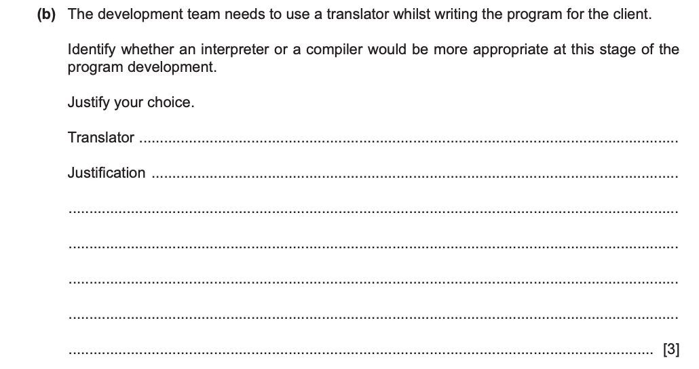
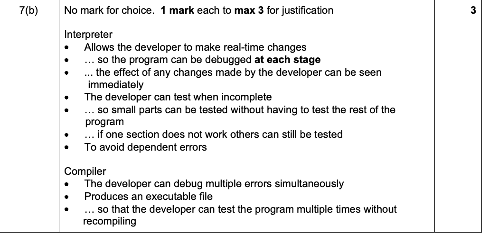

System software · Concept 01
Justify a choice from the work that must be done
Observe
| Factor | Native compiled route | High-level interpreted route |
|---|---|---|
| Before execution | Build target code and link if needed | Provide a suitable interpreter and executable program input |
| Frequent source changes | Rebuild the changed version | Try corrected source in the interpreting environment |
| Repeated use | Reuse the existing executable | Interpretation-related work may recur |
| Delivery | Executable can be supplied without source | Supply a form of the program the runtime can execute |
| Host requirement | Compatible target processor and system | Compatible interpreter and program environment |
Start with a question
Would you give the same recommendation to a learner trying frequent edits and a team distributing a finished native program?
Team A keeps changing a small usable section and checking intermediate values. Team B has completed a program that will run hourly on known compatible computers; they will keep the source internally. Link each recommendation to one of those conditions.
Explain
Explanation · 1 / 4
Compare preparation and feedback
Native compilation requires a successful build before that built code runs. A suitable interpreting environment can let a programmer try supported sections and see feedback as execution proceeds. This can help an edit, test and correct cycle. The section still needs to be executable in the chosen environment; arbitrary unfinished text cannot simply be run.
Explanation · 2 / 4
Compare repeated execution and delivery
A completed native executable can be reused without retranslating the original source for each run and can be distributed without that source. Interpretation requires a suitable execution environment and may repeat translation-related work. These are reasons tied to the taught models, not guaranteed speed measurements for all language implementations.
Explanation · 3 / 4
Compare what happens after a correction
A correction to compiled source needs a successful rebuild and distribution of the corrected executable. An interpreting environment can execute the corrected source it is given. In either case, a correction needs testing against the expected result, and the users must receive the intended version.
| Factor | Native compiled route | High-level interpreted route |
|---|---|---|
| Before execution | Build target code and link if needed | Provide a suitable interpreter and executable program input |
| Frequent source changes | Rebuild the changed version | Try corrected source in the interpreting environment |
| Repeated use | Reuse the existing executable | Interpretation-related work may recur |
| Delivery | Executable can be supplied without source | Supply a form of the program the runtime can execute |
| Host requirement | Compatible target processor and system | Compatible interpreter and program environment |
Explanation · 4 / 4
Build an explanation from the requirement
Use “because” to join requirement, mechanism and benefit. For Team A, prompt feedback on usable sections supports frequent corrections. For Team B, a suitable compiled executable can be repeatedly run and supplied without source. A compiler can also support debugging, and an interpreter is not always the best choice during development; the stated reasons decide whether a recommendation is justified.
Work together
Make two supported recommendations
Use Team A’s frequent edits and Team B’s finished hourly program.
Work together · 1 / 2
Recommend for development
A suitable interpreter allows Team A to execute usable sections, inspect results and try corrections promptly.
Work together · 2 / 2
Recommend for delivery
Compile for Team B’s known target systems so they can reuse and distribute an executable while retaining source internally. A later correction still requires a new build and deployment.
Name the approach, then explain how its operation meets the stated requirement.
Experiment
Select each development or delivery requirement, write a reason and only then compare it with the model explanation. Revisit the same choice after changing the requirement.
Explain your choice before comparing the model reasoning.
Check
Explain it yourself · Teacher-written
Is “use a compiler because compilers are better” an explanation? Replace it with a reason for Team B.
Check your reasoning
No. Team B runs the finished program repeatedly on compatible systems, so it can reuse a compiled executable without translating the source at each launch and distribute that executable without its source.
Past paper
Attempt the past-paper questions · 7 marks
2 original questions · 2 selected parts · 7 marks
Suggested independent working time: 7–14 minutes (teacher estimate).
Answer the original questions first. Open guidance, a teacher solution or the official mark scheme when needed. Only the named parts are assigned; extracts also retain their required shared context.
Original question · Cambridge 9618/12
1. Use translation tools at different development stages
Cambridge 9618/12 · October/November 2025 · 10(a) · 4 marks
Selected parts: 10(a) [4].

Hint — reading the question
The question supplies the order: interpreter first, compiler later. Explain what the programmer gains at each stage.
Reasoning and model answer — teacher-written
While coding, the programmer can use an interpreter to test and debug partially completed code, observe errors and try corrections promptly.
After completing the program, the programmer can compile it to produce an executable. That executable can be distributed without supplying the source and run repeatedly without re-interpreting the source each time.
Official mark scheme

Why this earns marks — teacher explanation
At most two marks come from the interpreter section and at most two from the compiler section. Four generic compiler advantages do not answer the whole question.
Common mistakes — teacher analysis
Do not say the interpreter produces a saved executable as its normal result. The compiler does not prove that a syntactically correct program fulfils the requirements.
Cambridge past-paper access page ↗ · Source references and page numbers are shown with each extract. © Cambridge University Press & Assessment / UCLES.
Original question · Cambridge 9618/12
2. Justify a translator choice during development
Cambridge 9618/12 · May/June 2023 · 7(b) · 3 marks
Selected parts: 7(b) [3].


Hint — reading the question
The team is still writing the program. State a choice, then give reasons tied to testing and correction at that stage.
Reasoning and model answer — teacher-written
An interpreter is suitable. The developer can test incomplete sections, rather than wait for the whole program to be finished. Changes can be tried promptly so their effects are visible, supporting debugging as each section is developed.
Official mark scheme

Why this earns marks — teacher explanation
The choice itself earns no mark. Up to three marks are for justification. The scheme also accepts a justified compiler choice, such as producing an executable for repeated tests without recompiling unchanged code. This is not a question with only one creditworthy label.
Common mistakes — teacher analysis
“Interpreter because it is easier” has no technical support. Do not reject every compiler answer when the official scheme explicitly allows a supported alternative.
Cambridge past-paper access page ↗ · Source references and page numbers are shown with each extract. © Cambridge University Press & Assessment / UCLES.
Connect
Keep this idea
Compare matching factors and justify the translator from feedback, repeated execution, distribution and platform requirements.
Java combines a compilation stage with execution by a virtual machine, so its artifacts need a separate map.
Check a common misunderstanding
Avoid absolute claims such as “compiled programs cannot be debugged” or “a compiler always produces the fastest correct program”.
Learning goals
- Compare benefits and drawbacks of compilation and interpretation.
- Justify compiler or interpreter use for stated development and execution requirements.